전체 섹션 전수 점검 · 데스크톱 1440px + 모바일 390px · 2026-06-29
각 부분 캡처 + “지금 상태 / 어떻게 고칠지”를 함께 정리했습니다. 텍스트 체크리스트는 개선-체크리스트.md.
content.ts·CSS 토큰·컴포넌트)와 대조해 실제 사용자가 보는 것과 정적/모션-끔 상태의 버그를 구분했습니다.
아래 캡처는 모든 섹션을 펼친 정적 모드 기준이며, 동적 콘텐츠(통계·영상·겹친 스텝)는 실제 값으로 복원해 촬영했습니다.
여러 섹션에 공통으로 걸리는 항목. 토큰/구조 단위라 한 번 고치면 광범위하게 개선됩니다.
| # | 항목 | 현재 → 수정 |
|---|---|---|
| G1 🔴 | 보조 텍스트 대비 부족 (WCAG AA 미달) | --muted:#8e8d8d on #f5f5f5 ≈ 3.0:1 (기준 4.5:1). 역할·태그·기간·카피·통계라벨·CTA서브 등 거의 모든 보조 텍스트에 사용 → 캡처에서 단어를 오독할 정도.→ --muted를 #5f5e5d~#6b6a6a (≈4.6:1)로 상향 |
| G2 🟡 | 데스크톱 보조 타이포가 너무 작음 | 태그·기간·라벨 12–13px. 모바일이 오히려 더 잘 읽힘. → 데스크톱 13→14px + 대비(G1) 동반 |
| G3 🔴 | 모바일 내비게이션 없음 | .nav-links{display:none}(≤720px)인데 햄버거/드로어 대체 UI가 없음. Nav.tsx에 모바일 메뉴 코드 자체가 없어 모바일에서 섹션 이동 불가.→ 햄버거 + 드로어(앵커 4개 + CTA) 추가 |
| G4 🟢 | KO 언어 버튼 비작동 | .nav-lang 버튼에 onClick 없음, 언어도 1개.→ 계획 없으면 제거, 있으면 토글 연결 |
| G5 🟡 | prefers-reduced-motion 폴백 깨짐 | ① 내러티브 3스텝이 grid-area:1/1로 겹침(reduced에서 전부 opacity:1) ② AX맵 정적 상태가 거의 빈 화면 ③ useCountUp reduced 가드 없음.→ reduced일 때 스텝 세로 배치 / AX맵 정적 완성본 / 카운트업 최종값 즉시 |
| G6 🟡 | CTA 퍼널 과다 · 문구 불일치 | contact/mailto CTA 10개, 문구 7종. 중앙정렬 “헤딩+버튼” 섹션이 GlowCTA·Philosophy·FinalCTA로 3중 중복. → 1차 CTA 문구 통일 + 중복 섹션 통합·역할 차별화 |
| G7 🟡 | 콘텐츠 중복 — 같은 여정 3번 | 진단→교육→실행→도구→정착이 Features(4) · FDE(4) · Process(5)로 반복. → 역할 분리(개념/타임라인/상세) 또는 둘로 통합 |
| G8 🟢 | 라이트 테마 vs 스펙(다크) | 현재 --bg:#f5f5f5 라이트. AGENTS.md·레퍼런스는 “다크 베이스”.→ 의도된 전환인지 확정(전략 결정) |
| G9 🟢 | 과도한 하단 여백 | stats·glowcta·philosophy·casequote 등 콘텐츠 아래 큰 빈 공간. → 애니 런웨이가 아닌 죽은 공간인지 확인 후 패딩 조정 |
| G10 🟢 | 죽은 링크 | 푸터 이용약관·개인정보 href="#"; “디자인 시스템”→/design-system.html은 파일 없음(404).→ 페이지 연결/비활성, design-system.html 생성 또는 링크 제거 |
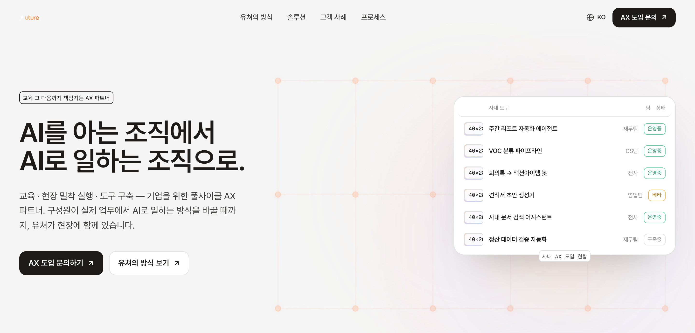
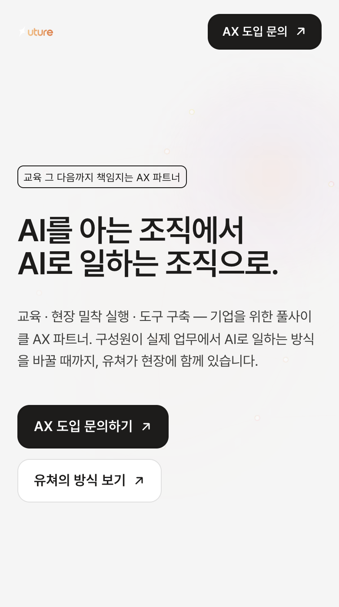
캡처는 3스텝을 펼쳐 복원한 것. 실제로는 스크롤에 따라 한 스텝씩 크로스페이드.
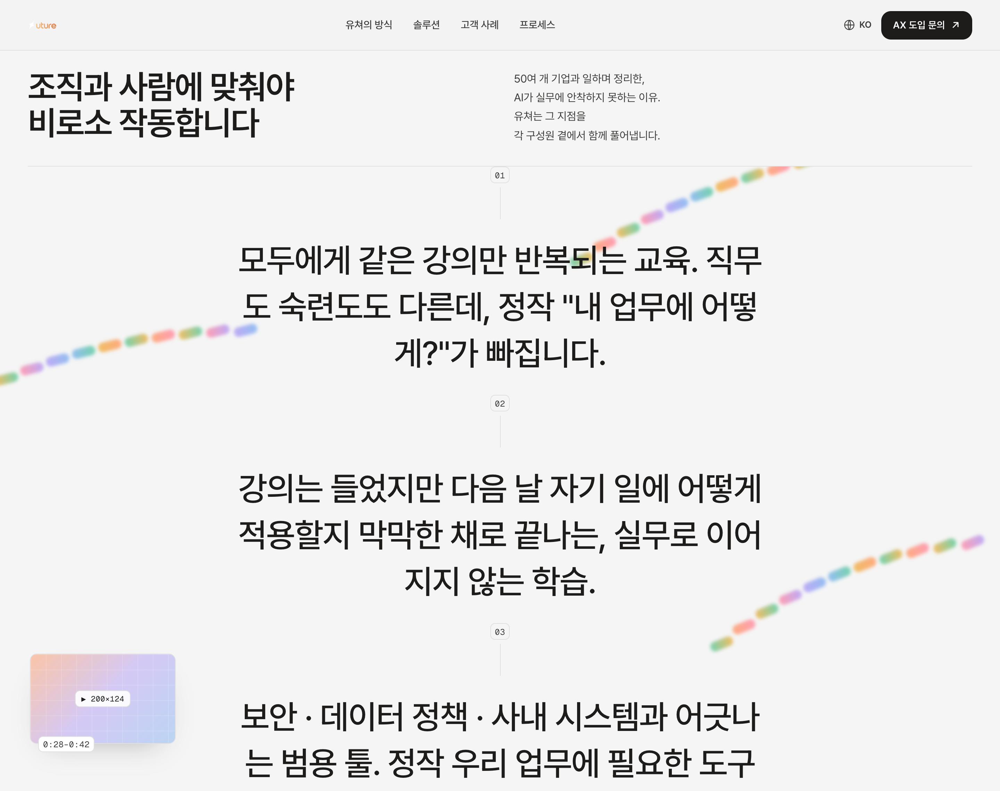
.narrative-step{grid-area:1/1} + reduced에서 전부 opacity:1 → 글자 뭉개짐 (G5)reduced일 때 세로 흐름 배치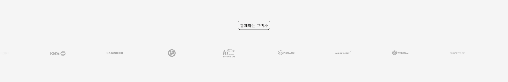
filter:grayscale(1) opacity(.6)기본 opacity 0.75–0.85 (hover 시 1.0)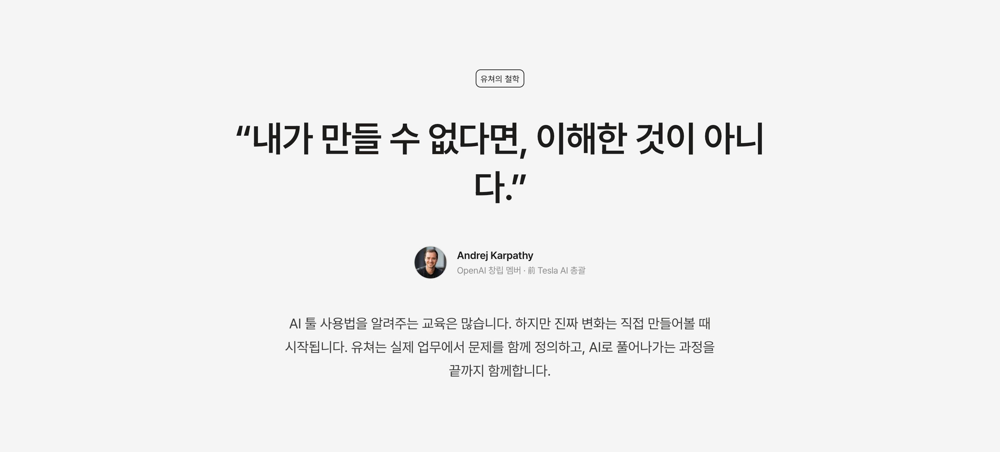
text-wrap:balance 또는 max-width 조정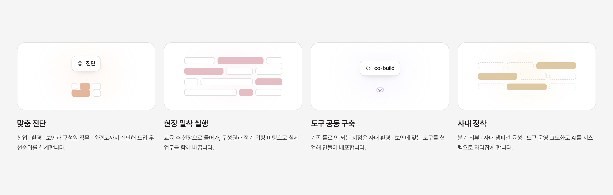
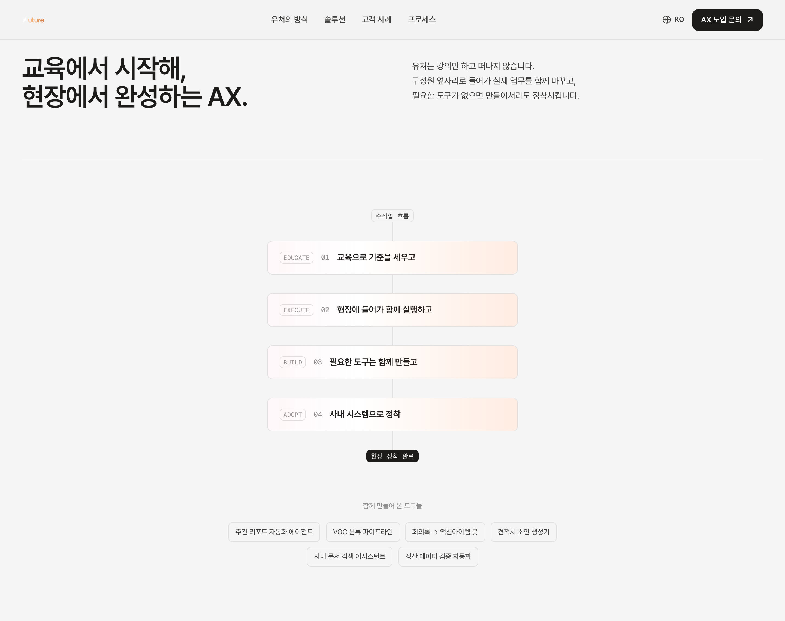
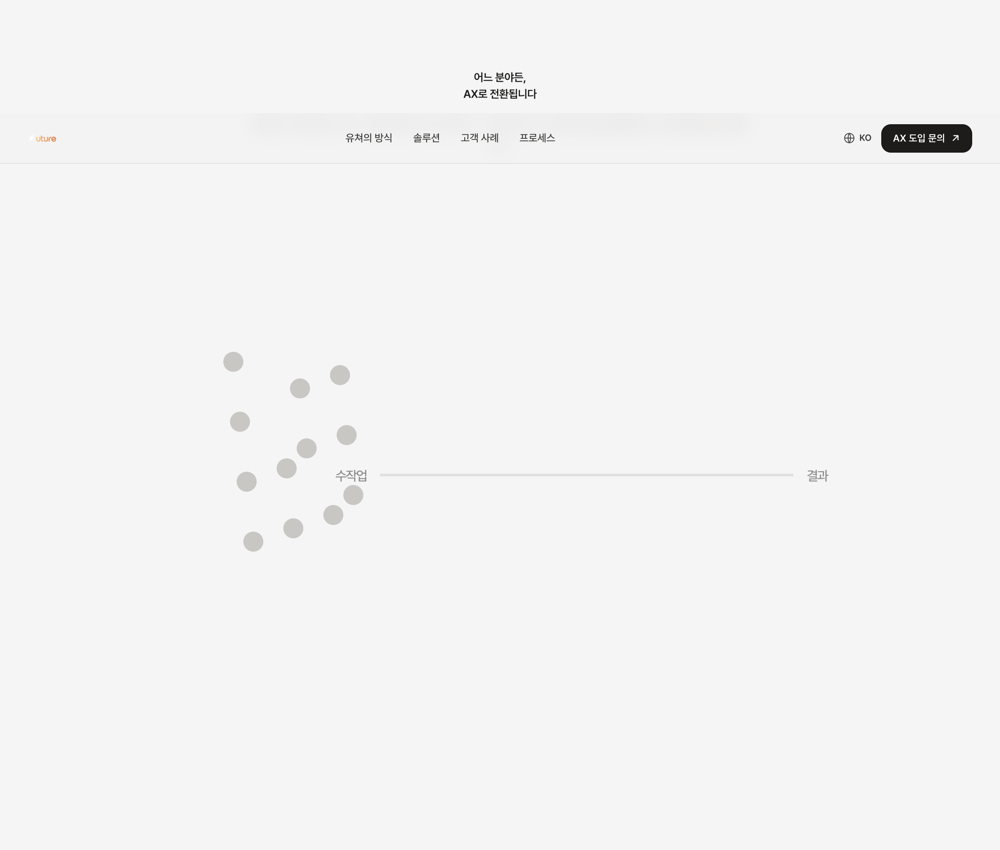
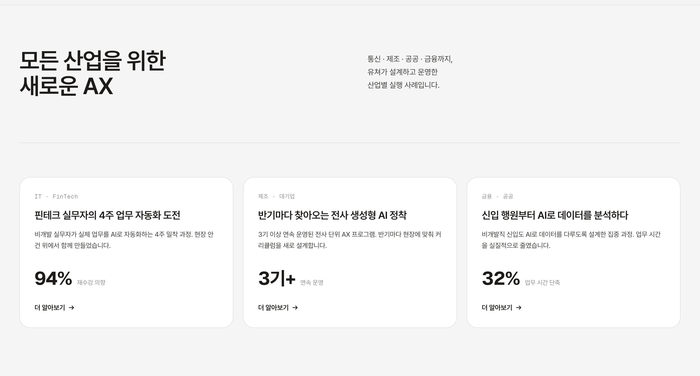
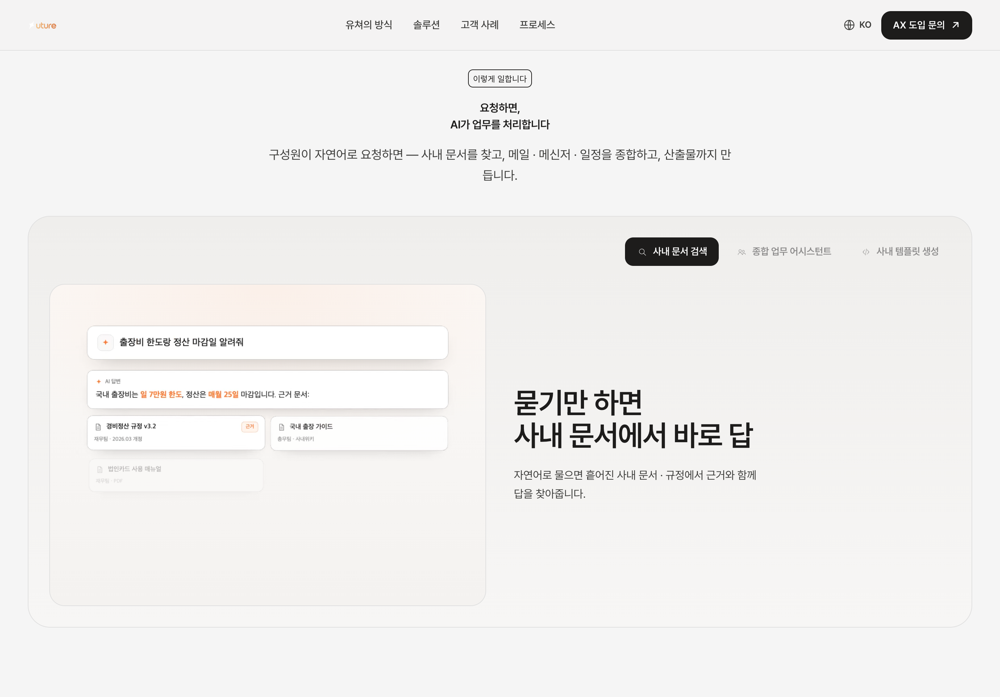
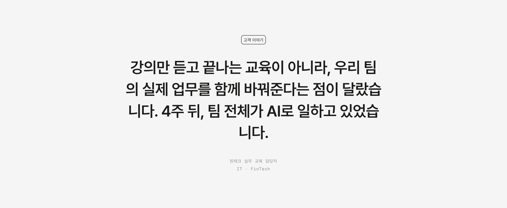
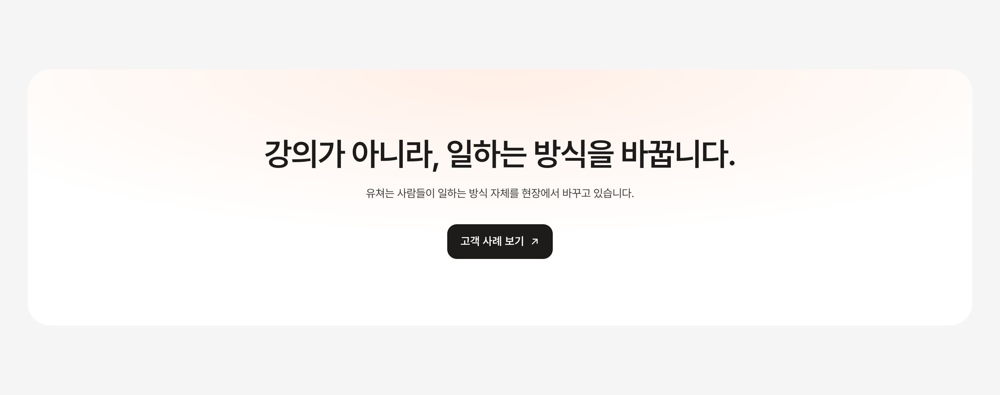
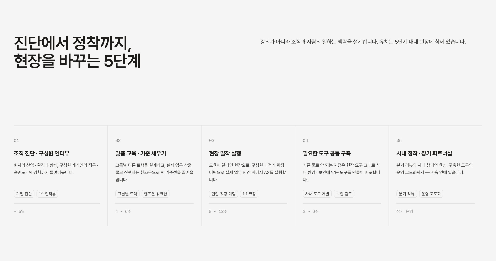
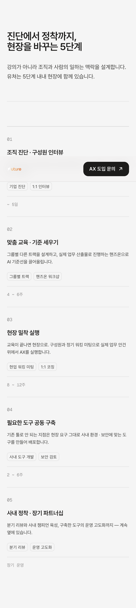
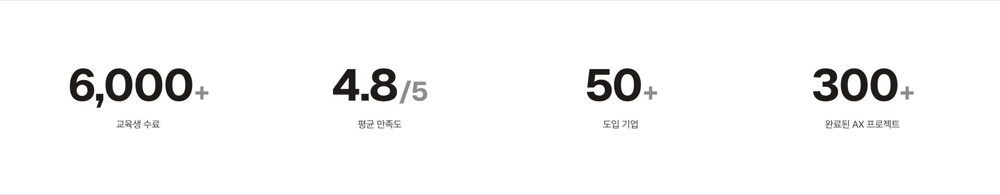
content.ts 데이터는 정상.useCountUp reduced 가드 없음reduced면 최종값 즉시 (G5)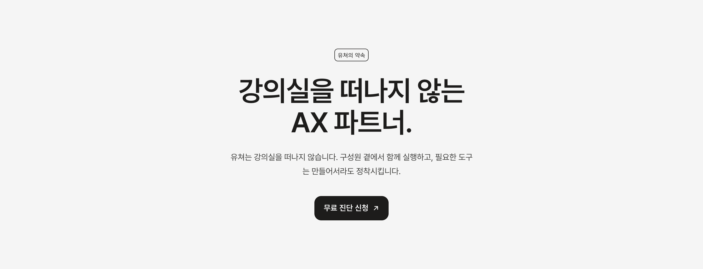
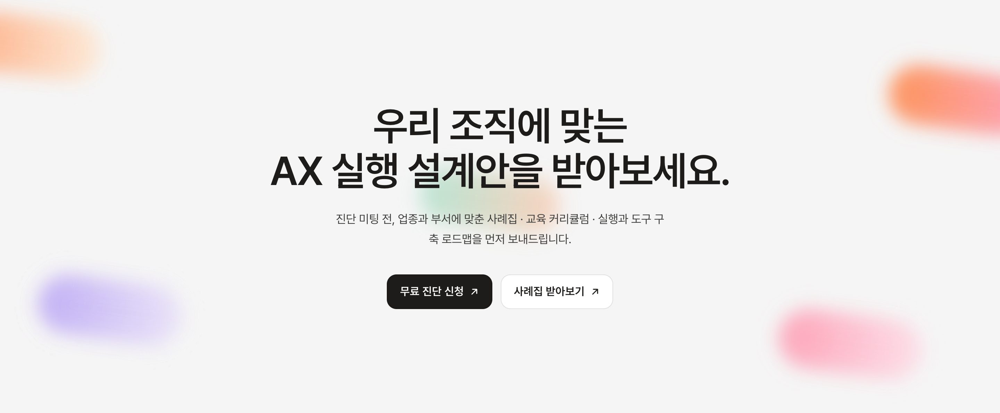
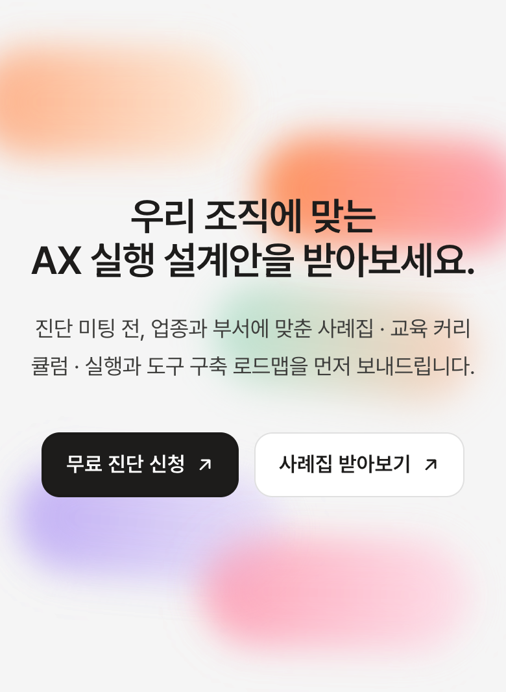
대부분 섹션은 세로 스택으로 잘 무너집니다. 핵심 이슈 2가지: